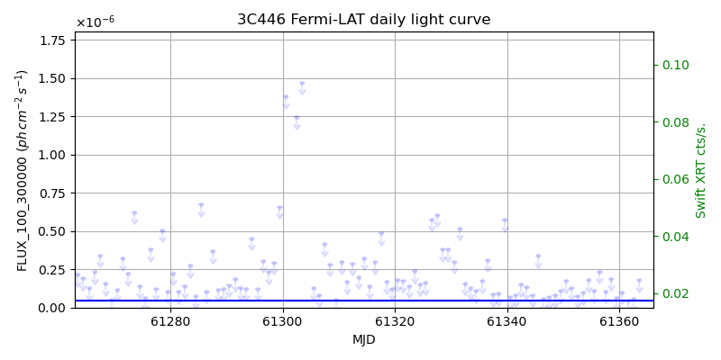
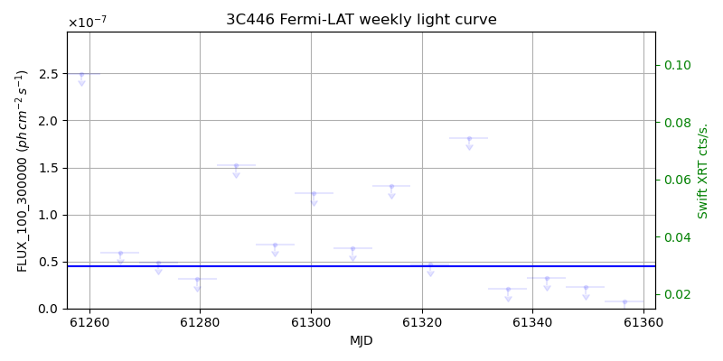
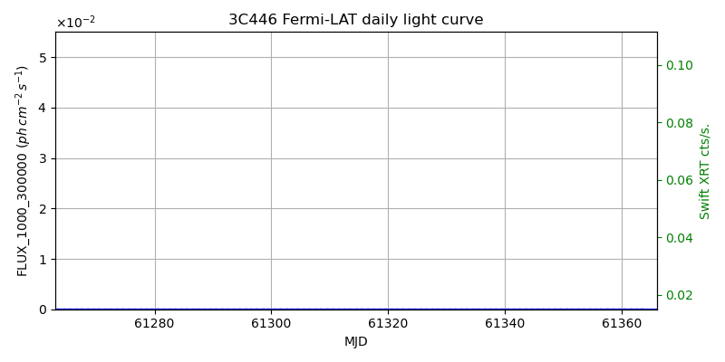
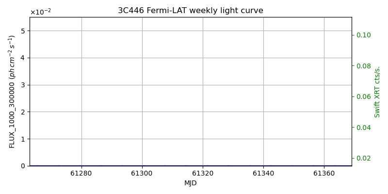

LAT Lightcurve site: https://fermi.gsfc.nasa.gov/ssc/data/access/lat/msl_lc/source/3C_446
Swift site: https://www.swift.psu.edu/monitoring/source.php?source=3C446
NED: Query
Time of last update of this page: UT: 2026-11-20 16:29 (MJD: 61364.687)
| Property | Value |
|---|---|
| R.A. | 22:25:47.28 |
| Dec. | -4:57:00.0 |
| z | 1.404 |
| 3FGL SpectrumType | PowerLaw |
| 3FGL PL Index | 2.36 |
| 3FGL Flux_100_300000 | 4.44e-08 1 / (s cm2) |
| 3FGL Flux_1000_300000 | 1.95e-09 1 / (s cm2) |
| 3FGL Flux >200 GeV | 1.45e-12 1 / (s cm2) |
| 3FGL Extrap. Crab >200 GeV | 0.01 |
| 3FGL Flux After EBL Absorption >200GeV | 3.92e-15 1 / (s cm2) |
| 3FGL EBL Crab Fraction >200GeV | 0.00 |

| MJD | dMJD | Flux | dFlux | Frac3FGL | FracCrab>200GeV | EBLFracCrab>200GeV |
|---|---|---|---|---|---|---|
| 61359.50 | 0.50 | 6.09e-08 | 0.00e+00 | 0.00 | 0.00 | 0.00 |
| 61360.50 | 0.50 | 1.00e-07 | 0.00e+00 | 0.00 | 0.00 | 0.00 |
| 61361.50 | 0.50 | 4.41e-08 | 0.00e+00 | 0.00 | 0.00 | 0.00 |
| 61362.50 | 0.50 | 5.53e-08 | 0.00e+00 | 0.00 | 0.00 | 0.00 |
| 61363.50 | 0.50 | 1.80e-07 | 0.00e+00 | 0.00 | 0.00 | 0.00 |

| MJD | dMJD | Flux | dFlux | Frac3FGL | FracCrab>200GeV | EBLFracCrab>200GeV |
|---|---|---|---|---|---|---|
| 61328.50 | 3.50 | 1.82e-07 | 0.00e+00 | 0.00 | 0.00 | 0.00 |
| 61335.50 | 3.50 | 2.08e-08 | 0.00e+00 | 0.00 | 0.00 | 0.00 |
| 61342.50 | 3.50 | 3.21e-08 | 0.00e+00 | 0.00 | 0.00 | 0.00 |
| 61349.50 | 3.50 | 2.27e-08 | 0.00e+00 | 0.00 | 0.00 | 0.00 |
| 61356.50 | 3.50 | 7.05e-09 | 0.00e+00 | 0.00 | 0.00 | 0.00 |

| MJD | dMJD | Flux | dFlux | Frac3FGL | FracCrab>200GeV | EBLFracCrab>200GeV |
|---|---|---|---|---|---|---|
| 61359.50 | 0.50 | 1.54e-08 | 0.00e+00 | 0.00 | 0.00 | 0.00 |
| 61360.50 | 0.50 | 3.78e-08 | 0.00e+00 | 0.00 | 0.00 | 0.00 |
| 61361.50 | 0.50 | 1.56e-08 | 0.00e+00 | 0.00 | 0.00 | 0.00 |
| 61362.50 | 0.50 | 8.47e-09 | 0.00e+00 | 0.00 | 0.00 | 0.00 |
| 61363.50 | 0.50 | 1.51e-08 | 0.00e+00 | 0.00 | 0.00 | 0.00 |

| MJD | dMJD | Flux | dFlux | Frac3FGL | FracCrab>200GeV | EBLFracCrab>200GeV |
|---|---|---|---|---|---|---|
| 61328.50 | 3.50 | 1.78e-08 | 0.00e+00 | 0.00 | 0.00 | 0.00 |
| 61335.50 | 3.50 | 1.05e-08 | 0.00e+00 | 0.00 | 0.00 | 0.00 |
| 61342.50 | 3.50 | 2.63e-09 | 0.00e+00 | 0.00 | 0.00 | 0.00 |
| 61349.50 | 3.50 | 2.43e-09 | 0.00e+00 | 0.00 | 0.00 | 0.00 |
| 61356.50 | 3.50 | 2.26e-09 | 0.00e+00 | 0.00 | 0.00 | 0.00 |
--------------------------------------------------------- Using user-supplied coords: 22:25:47.28 -4:57:00.0 2000 --------------------------------------------------------- FLWO UT night of: 2026-11-21 Local Sid. @ Midnight: 03:37 Sunset (-15.0) (local, UT): 18:33 01:33 Sunrise (-15.0) (local, UT): 05:47 12:47 Moonrise (local, UT): Moonset (local, UT): 03:40 10:40 Moon phase: 0.85 --------------------------------------------------------- AzTime LSID UT Obj_el Obj_az Mn_el Mn_az Sep. --------------------------------------------------------- 18:33 22:09 01:33 53.3 172.4 47.9 117.4 34.5 19:03 22:39 02:03 53.4 185.0 53.3 125.0 34.7 19:33 23:09 02:33 52.2 197.2 58.2 134.7 34.9 20:03 23:39 03:03 49.7 208.5 62.3 146.9 35.1 20:33 00:09 03:33 46.2 218.3 65.1 162.1 35.3 21:03 00:39 04:03 41.8 226.8 66.3 179.7 35.5 21:33 01:09 04:33 36.9 234.1 65.4 197.5 35.7 22:03 01:39 05:03 31.5 240.4 62.9 213.2 35.8 22:33 02:09 05:33 25.8 246.0 59.0 225.9 36.0 23:03 02:39 06:03 19.9 250.9 54.2 235.9 36.2 23:33 03:09 06:33 13.7 255.4 48.9 243.9 36.4 00:03 03:39 07:03 7.6 259.6 43.2 250.4 36.6 00:33 04:10 07:33 1.5 263.7 37.3 255.9 36.8 01:03 04:40 08:03 -4.9 267.6 31.2 260.7 37.1 01:33 05:10 08:33 -11.7 271.5 25.1 265.1 37.3 02:03 05:40 09:03 -18.1 275.6 19.0 269.2 37.5 02:33 06:10 09:33 -24.4 279.9 12.9 273.0 37.8 03:03 06:40 10:03 -30.7 284.5 6.8 276.9 38.1 03:33 07:10 10:33 -36.8 289.8 1.0 280.7 38.4 04:03 07:40 11:03 -42.7 295.8 -4.9 284.7 38.6 04:33 08:10 11:33 -48.3 302.9 -11.1 288.8 39.0 05:03 08:40 12:03 -53.4 311.6 -16.8 293.2 39.3 05:33 09:10 12:33 -57.7 322.4 -22.3 298.1 39.6 05:47 09:25 12:47 -59.5 328.4 -24.8 300.5 39.8 --------------------------------------------------------- Source never above horizon of 55.0 deg. Dark hours >55 deg.: 0.00